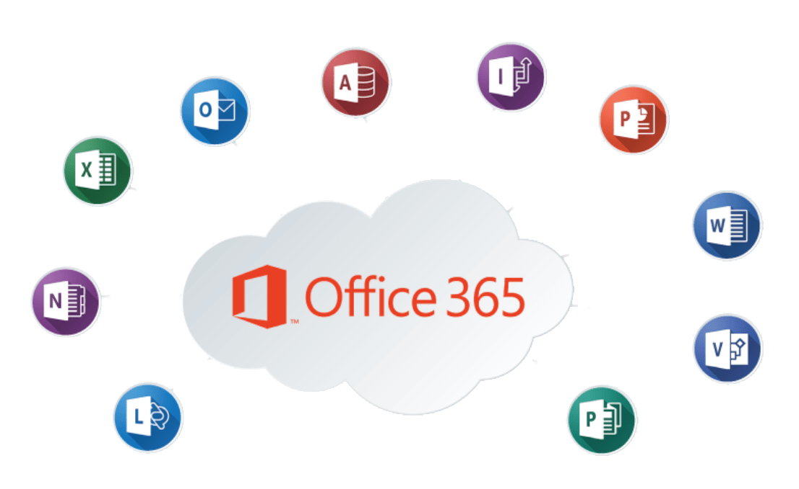
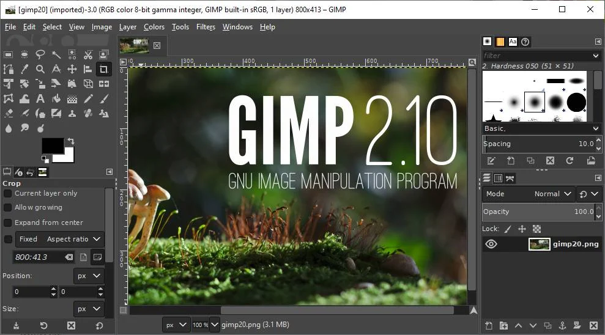

Instalacja oprogramowania biurowego oraz graficznego.
Oprogramowanie Biurowe jak i Graficzne jest niezbędne do wykonywania różnych czynności. Najlepszym oprogramowaniem biurowym są wszystkie aplikacje z pakietu microsoft 365 w skład którego wchodzą takie programy jak:
- microsoft Word
- microsoft Exel
- microsoft Power Point
- microsoft Teams
- microsoft OneNote
- microsoft Outlook
- microsoft Access

W programacg graficznych możemy wyróżnić takie jak:
- Gimp
- Paint.NET
- Adobe Photoshop CC

Instalacja oprogramowania biórowego jak i graficznego odbywa sie tak samo jak innych programów.